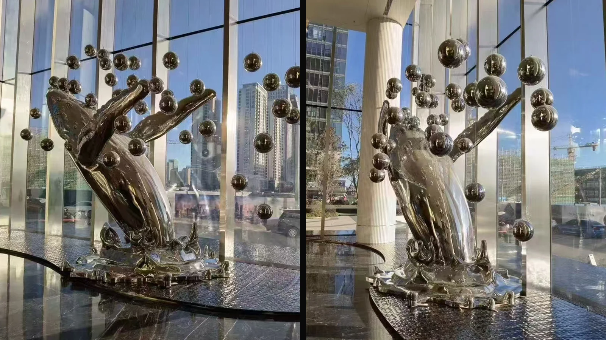

Can this direction work without a water feature?
Yes, a dry lobby installation can be assessed. The base, guest circulation, lighting and maintenance plan would be developed for that setting.
Lobby / water feature
WEIERYANG is a sculpture studio and manufacturer based in China. We make custom sculptures from client drawings or develop original designs with designers, contractors, suppliers, developer procurement teams and private owners.
A reflective focal point needs room to work. Start with guest circulation, the water edge and the surrounding architecture, then develop a distinct sculpture for your lobby.
Authorized commercial-space references. These photographs are not presented as completed WEIERYANG hotel commissions. Hotel use is a proposed application; the images inform an original, site-specific design.



Our project scope can include sculpture design, structural development, fabrication, export packing and overseas installation guidance.
The Middle East flying-bird record documents segmented assembly, lifting and on-site alignment. These are construction-phase photographs, not completed hotel commissions or workshop inspection records. Agree the project drawings, samples and fabrication checks to be supplied for your commission before production.
Before ordering, confirm the design, material, approvals, shipping, on-site services and local installation responsibilities in writing for your project.
Yes, a dry lobby installation can be assessed. The base, guest circulation, lighting and maintenance plan would be developed for that setting.
A proposal follows review of the site, original design, scale, finish, structure, destination and installation scope. These reference images do not carry a fixed product price.
WEIERYANG is a sculpture studio and manufacturer based in China. We make custom sculptures from client drawings or develop original designs with designers, contractors, suppliers, developer procurement teams and private owners.
Before ordering, confirm the design, material, approvals, shipping, on-site services and local installation responsibilities in writing for your project.